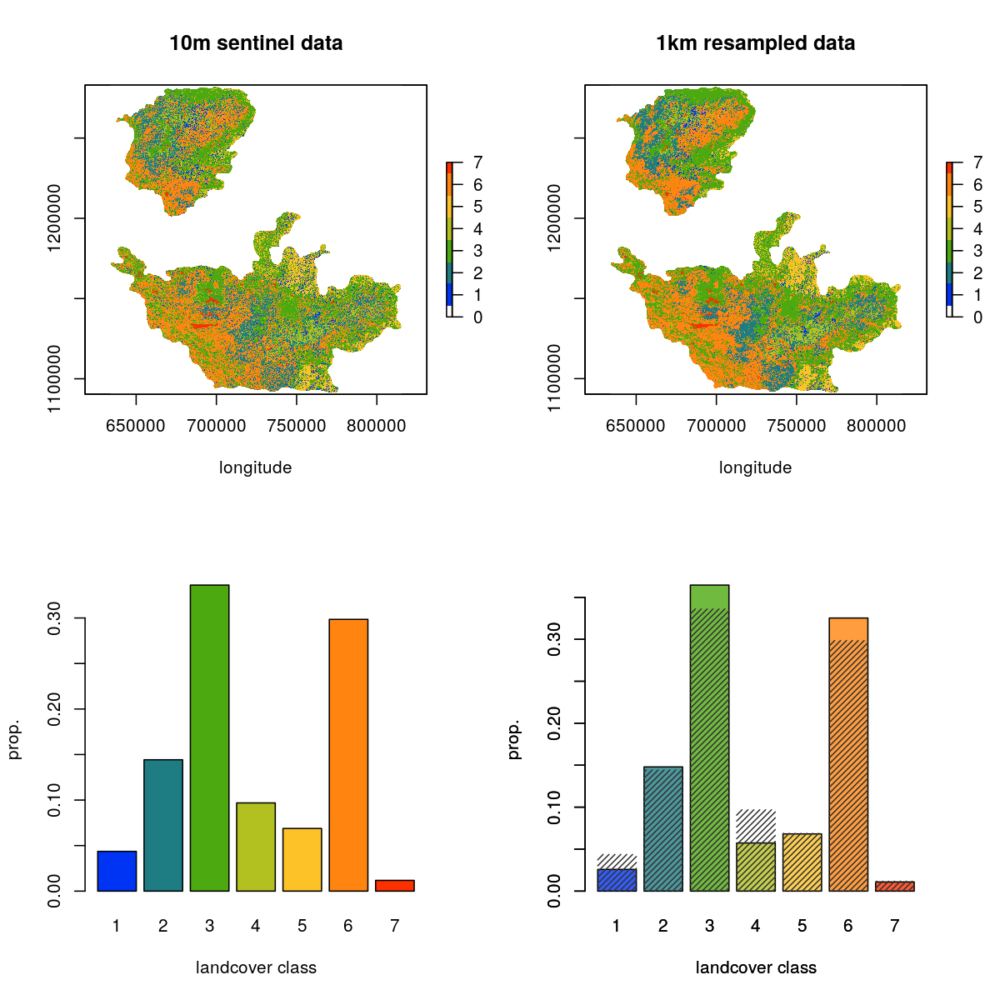

Section 3 Prepare landscape data
3.1 Prepare libraries
# load libs
library(raster)
library(stringi)
library(glue)
library(gdalUtils)
library(purrr)
# prep mode function to aggregate
funcMode <- function(x, na.rm = T) {
ux <- unique(x)
ux[which.max(tabulate(match(x, ux)))]
}
# a basic test
assertthat::assert_that(funcMode(c(2,2,2,2,3,3,3,4)) == as.character(2),
msg = "problem in the mode function") # works3.2 Prepare initial data
3.2.1 Prepare spatial extent
3.2.2 Prepare terrain rasters
# load elevation and crop to hills size, then mask by hills
alt <- raster("data/spatial/Elevation/alt")
alt.hills <- crop(alt, as(buffer, "Spatial"))
rm(alt); gc()
# get slope and aspect
slopeData <- terrain(x = alt.hills, opt = c("slope", "aspect"))
elevData <- raster::stack(alt.hills, slopeData)
rm(alt.hills); gc()3.2.3 Prepare CHELSA rasters
# list chelsa files
chelsaFiles <- list.files("data/chelsa/", full.names = TRUE, pattern = "*.tif")
# gather chelsa rasters
chelsaData <- purrr::map(chelsaFiles, function(chr){
a <- raster(chr)
crs(a) <- crs(elevData)
a <- crop(a, as(buffer, "Spatial"))
return(a)
})
# stack chelsa data
chelsaData <- raster::stack(chelsaData)3.2.4 Stack prepared rasters
3.2.5 Prepare landcover
# read in landcover raster location
landcover <- "data/landUseClassification/Reprojected Image_26thJan2020_UTM_Ghats.tif"
# get extent
e = bbox(raster(landcover))
# init resolution
res_init <- res(raster(landcover))
# res to transform to 1000m
res_final <- res_init*100
# use gdalutils gdalwarp for resampling transform
# to 1km from 10m
gdalwarp(srcfile = landcover,
dstfile = "data/landUseClassification/lc_01km.tif",
tr=c(res_final), r='mode', te=c(e))3.2.6 Show resampled landcover
# mask by study area
{
landcover <- raster(landcover)
# landcover <- mask(landcover, mask = as(hills, "Spatial"))
lc_data <- raster("data/landUseClassification/lc_01km.tif")
# lc_data <- mask(lc_data, mask = as(hills, "Spatial"))
lc_data[lc_data == 0] <- NA
}
# make raster barplot data
data1km = raster::getValues(lc_data); data1km = data1km[data1km > 0]; data1km = table(data1km); data1km = data1km/sum(data1km)
{
data10m = raster::getValues(landcover); data10m = data10m[data10m > 0]
data10m = tibble(value = data10m)
data10m = dplyr::count(a, value) %>% dplyr::mutate(n=n/sum(n))
data10m = xtabs(n~value, data10m)
}
# map rasters
{
png(filename = "figs/figLandcoverResample.png", width = 1200, height = 1200,
res = 150)
par(mfrow=c(2,2))
# rasterplots
raster::plot(landcover, col = c("white", scico::scico(palette = "batlow", 7)),
main = "10m sentinel data", xlab = "longitude", y = "latitude")
plot(hills, add=T, border = "red", col = "transparent")
raster::plot(rasterAgg1km, col = c("white", scico::scico(palette = "batlow", 7)),
main = "1km resampled data", xlab = "longitude", y = "latitude")
plot(hills, add=T, border = "red", col = "transparent")
# barplots
barplot(data10m, xlab = c("landcover class"), ylab = "prop.",
col = scico::scico(palette = "batlow", 7))
barplot(data1km, xlab = c("landcover class"), ylab = "prop.",
col = scico::scico(palette = "batlow", 7), alpha =0.8), add = F)
barplot(data10m, xlab = c("landcover class"), ylab = "prop.",
col = "grey20", border = NA, density = 30, add = T)
dev.off()
}
3.3 Resample rasters
3.3.1 Read landcover as list
Here, we read in the 1km landcover raster and set 0 to NA.
3.3.2 Reproject environmental data to landcover
# resample to the corresponding landcover data
env_data_resamp <- projectRaster(from = env_data, to = lc_data, crs = crs(lc_data), res = res(lc_data))
# export as raster stack
land_stack <- stack(env_data_resamp, lc_data)
# get names
land_names <- glue('data/spatial/landscape_resamp{c("01")}km.tif')
# write to file
writeRaster(land_stack, filename = as.character(land_names), overwrite=TRUE)